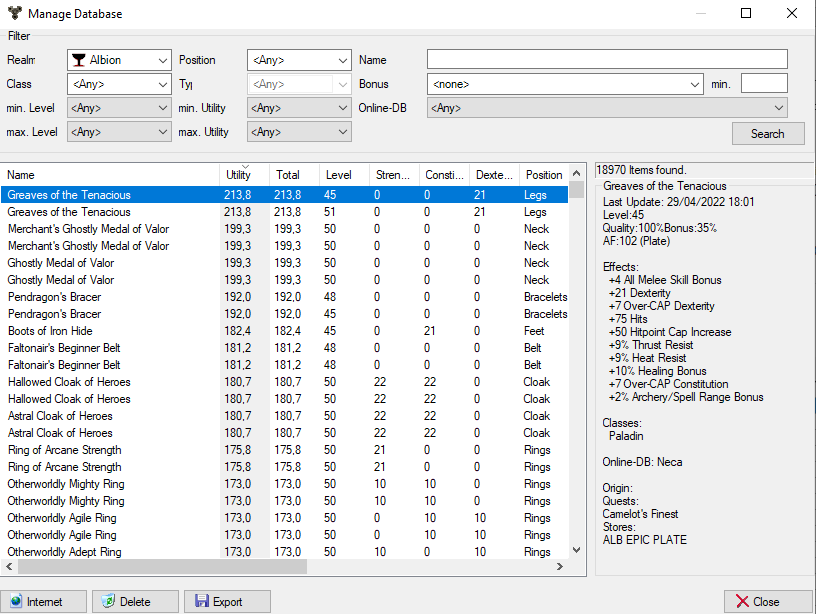

Manage database

This dialog is for the administration of the item database. It is called
via menu - database -> Manage ...
The options
Reich: Show only items that apply to the Reich
- Class: Show only items that the class could use.
Note:
This excludes only items that have class restrictions, and the specified
class is not included.
Position: Only items for the specified position are displayed.
- Type: Only objects of the specified type. In the case of armaments
positions, here is the type of armor, in the case of weapons, the type of
weapon.
Item list
The objects found are displayed here. See also here.
The object information
In this box, the properties of the selected item are displayed.
Delete
Use this button to delete the selected items.
Note:
Multiple selection in the item list is only possible if the edit mode is
off.
Export
The selected items are written in an XML file.